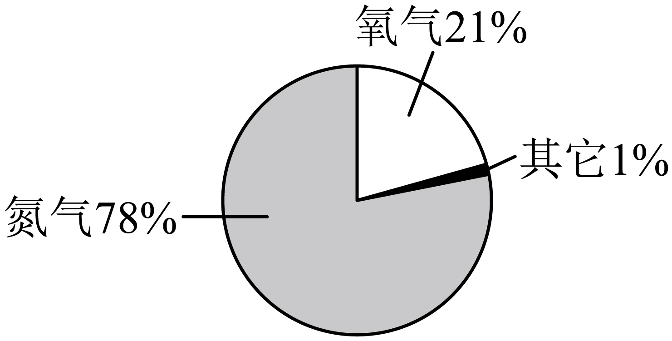

2026年北京市顺义区初中学业水平考试化学试卷 · 选择题 第1、2、3、4、5题
1. 空气的成分（体积分数）如下图，体积分数最大的是

A. 氮气B. 二氧化碳C. 氧气D. 稀有气体
2. 下列气体中，能供给动植物呼吸的是
A. H2B. O2C. N2D. CO2
3. 下列变化属于化学变化的是
A. 酒精挥发B. 矿石粉碎C. 蜡烛燃烧D. 冰雪融化
4. 下列生活用品，利用金属导电性的是
A. 铁锅B. 铜导线C. 银饰品D. 不锈钢汤匙
5. 下列物质中，属于溶液的是
A. 食盐水B. 酸奶C. 泥水D. 米粥